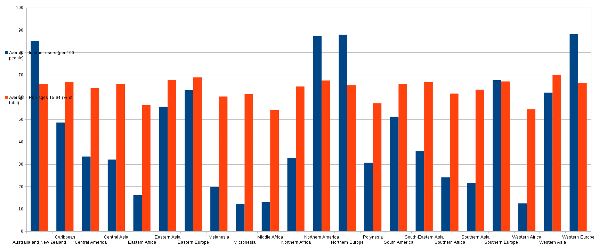
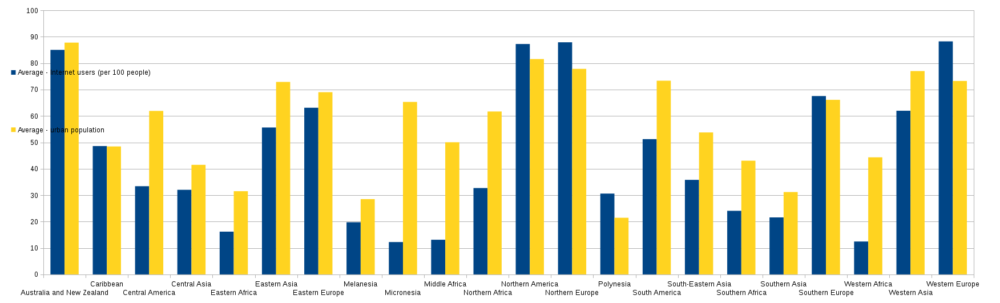

CS0100 STUDIO 2
Vesselina Ratcheva
I was looking for a relationship between internet users (per 100) and people of working age (per 100, to combat the stereotype that old people are afraid of technology; also your 3-year-old should not be online) and also between internet users and urban population (per 100).
I mapped all of this to sub-region. Since we have a lot of sub-regions here, the data might be a bit hard to read, but what I found was that the correlations were stronger in the more developed regions (i.e. your grandma is more likely to be playing the real-life version of Farmville over at her village than the digital one). In less developed countries, the percent of internet users was low even when there were many people of working age. There was a slightly better correlation between intenet users and urban population.
Image 1: Internet to working age by sub-region:

Image 2: Internet to urban population by sub-region:
